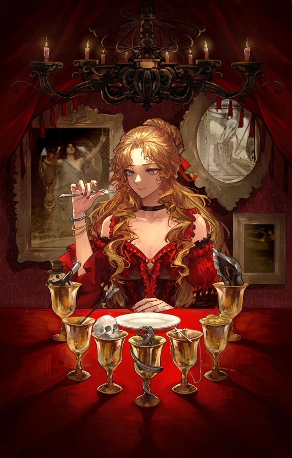

Jenna is one of the few Demonesses who were born female. * Her stage name is ‘Little Minx’ and she is also known as a ‘Showy Diva’.
This page includes major-spoiler information from the linked source article. The fact fields below are transcribed from that article’s character infobox.Overview
Jenna is one of the few Demonesses who were born female. * Her stage name is ‘Little Minx’ and she is also known as a ‘Showy Diva’.
The page uses the source article’s current naming, status, and progression terminology rather than the older roster shorthand.
Appearance
Role & affiliations
Aliases and titles
- Seven of Cups
- Little Minx
- Showy Diva
- Jian Na
Affiliations
- Tarot Club
- Sick Church
- Théâtre de l’Ancienne Cage à Pigeons
Occupation(s)
- Pope of the Sick Church
- Chanteuse
- Apprentice Actress
- Informant of the Church of the Eternal Blazing Sun
Religion(s)
- Church of the Fool
- Church of the Eternal Blazing Sun
Pathway & abilities
Pathway: Demoness
Recorded progression: Not listed

Image gallery

Sources
Profile facts were checked against the Jenna article on the Lord of the Mysteries Wiki. The linked source is fan-maintained and may change; it also contains spoilers for Lord of Mysteries and Circle of Inevitability.
Portrait and pathway artwork is shown for reference; credit belongs to the original creators.